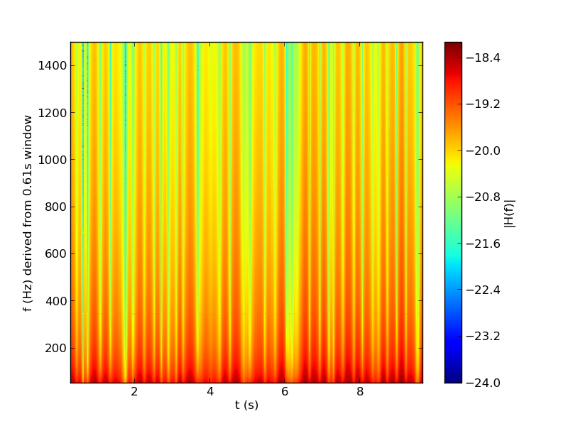

Plot the band power of the LIGO big dog event¶
downloading LIGO bigdog data from http://www.ligo.org/science/GW100916/HLV-strain.txt to /home/vanderplas/astroML_data/LIGO_bigdog.npy
Downloading http://www.ligo.org/science/GW100916/HLV-strain.txt
[= ] 288.0kb / 11.25Mb
[== ] 576.0kb / 11.25Mb
[=== ] 864.0kb / 11.25Mb
[==== ] 1.13Mb / 11.25Mb
[===== ] 1.41Mb / 11.25Mb
[====== ] 1.69Mb / 11.25Mb
[======= ] 1.97Mb / 11.25Mb
[======== ] 2.25Mb / 11.25Mb
[========= ] 2.53Mb / 11.25Mb
[========== ] 2.81Mb / 11.25Mb
[=========== ] 3.09Mb / 11.25Mb
[============ ] 3.38Mb / 11.25Mb
[============= ] 3.66Mb / 11.25Mb
[============== ] 3.94Mb / 11.25Mb
[=============== ] 4.22Mb / 11.25Mb
[================ ] 4.50Mb / 11.25Mb
[================= ] 4.78Mb / 11.25Mb
[================== ] 5.06Mb / 11.25Mb
[=================== ] 5.34Mb / 11.25Mb
[==================== ] 5.63Mb / 11.25Mb
[===================== ] 5.91Mb / 11.25Mb
[====================== ] 6.19Mb / 11.25Mb
[======================= ] 6.47Mb / 11.25Mb
[======================== ] 6.75Mb / 11.25Mb
[========================= ] 7.03Mb / 11.25Mb
[========================== ] 7.31Mb / 11.25Mb
[=========================== ] 7.59Mb / 11.25Mb
[============================ ] 7.88Mb / 11.25Mb
[============================= ] 8.16Mb / 11.25Mb
[============================== ] 8.44Mb / 11.25Mb
[=============================== ] 8.72Mb / 11.25Mb
[================================ ] 9.00Mb / 11.25Mb
[================================= ] 9.28Mb / 11.25Mb
[================================== ] 9.56Mb / 11.25Mb
[=================================== ] 9.84Mb / 11.25Mb
[==================================== ] 10.13Mb / 11.25Mb
[===================================== ] 10.41Mb / 11.25Mb
[====================================== ] 10.69Mb / 11.25Mb
[=======================================] 10.97Mb / 11.25Mb
[========================================] 11.25Mb / 11.25Mb
[=========================================] 11.25Mb / 11.25Mb
# Author: Jake VanderPlas <vanderplas@astro.washington.edu>
# License: BSD
# The figure produced by this code is published in the textbook
# "Statistics, Data Mining, and Machine Learning in Astronomy" (2013)
# For more information, see http://astroML.github.com
import numpy as np
from matplotlib import pyplot as plt
from astroML.datasets import fetch_LIGO_bigdog
from astroML.fourier import FT_continuous
def multiple_power_spectrum(t, x, window_size=10000, step_size=1000):
assert x.shape == t.shape
assert x.ndim == 1
assert len(x) > window_size
N_steps = (len(x) - window_size) / step_size
indices = np.arange(window_size) + step_size * np.arange(N_steps)[:, None]
X = x[indices].astype(complex)
f, H = FT_continuous(t[:window_size], X)
i = (f > 0)
return f[i], abs(H[:, i])
X = fetch_LIGO_bigdog()
t = X['t']
x = X['Hanford']
window_size = 10000
step_size = 500
f, P = multiple_power_spectrum(t, x,
window_size=window_size,
step_size=step_size)
i = (f > 50) & (f < 1500)
P = P[:, i]
f = f[i]
plt.imshow(np.log10(P).T, origin='lower', aspect='auto',
extent=[t[window_size / 2],
t[window_size / 2 + step_size * P.shape[0]],
f[0], f[-1]])
plt.xlabel('t (s)')
plt.ylabel('f (Hz) derived from %.2fs window' % (t[window_size] - t[0]))
plt.colorbar().set_label('|H(f)|')
plt.show()